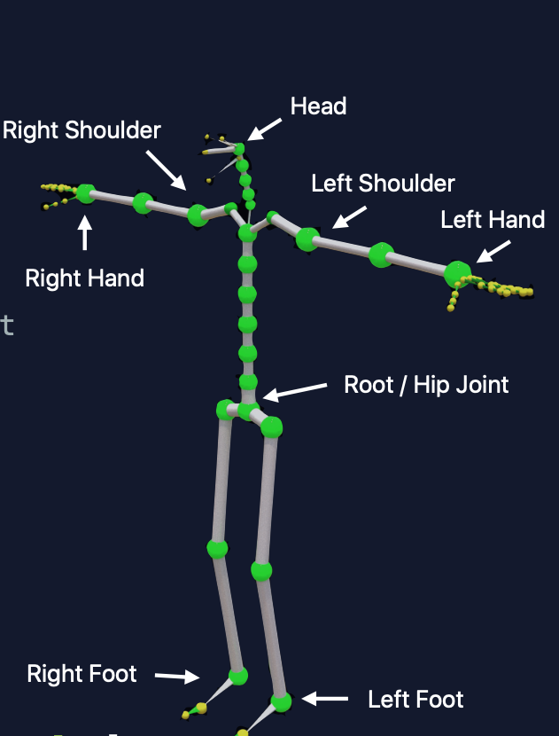
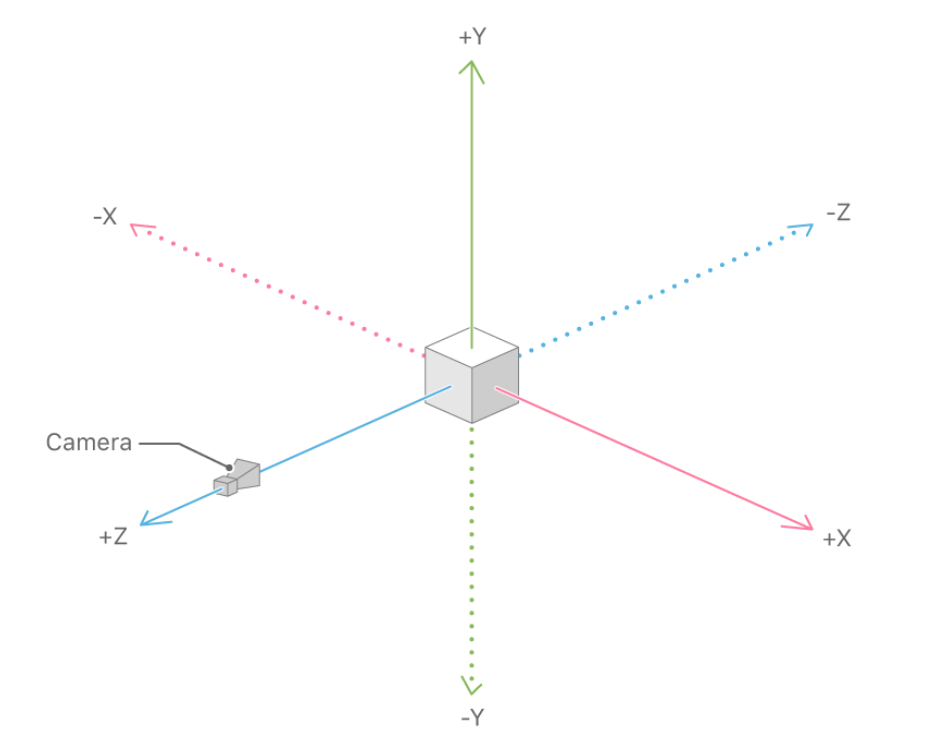
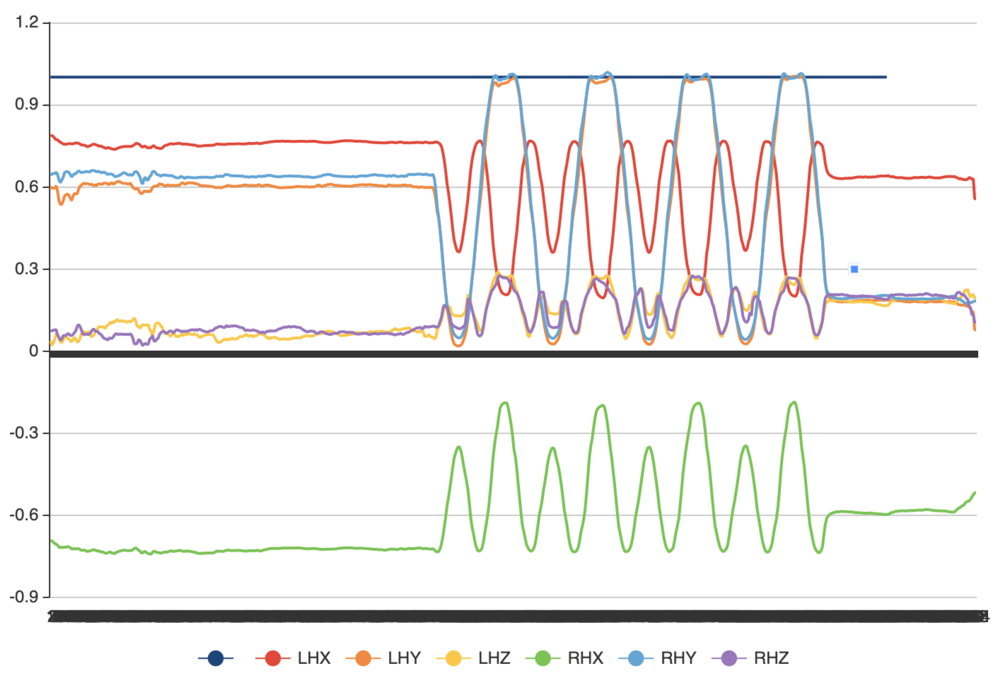
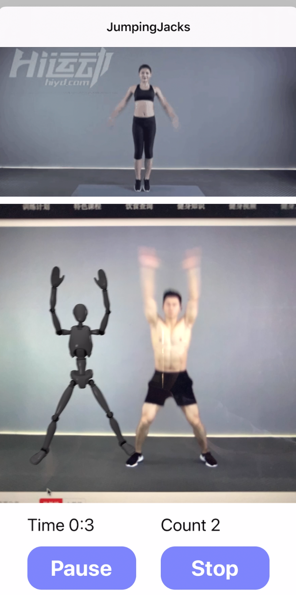

ARKit framework provides the captured skeleton of a person from iPhone’s back camera in real-time. Detailed three-dimensional joint data can be extracted from the skeleton such as the distance of Right Hand Joint with respect to Root / Hip Joint. Below are the skeleton and some of the joints.
 skeleton
ARKit uses a right-handed coordinate system where the direction of view is along the negative Z-axis, as illustrated below.
 coordinate
In order to explore the pattern of jumping jacks, a video of a professional coach doing jumping jacks is fed into the ARKit framework. As a simple start, 6 kinds of data are chosen where LHX means “Left-Hand joint data on X-axis” etc. From the data, it can be concluded that a jumping jack has a certain pattern and the absolute value of two hands or feet are almost identical in the same direction. If the minimum of RHY and LHY are regarded as a beginning of jumping jacks, the next appearance of minimum stands for the ending of jumping jacks roughly. In this way, the algorithm detects the minimum and maximum, combines the joint data of the left/right hand/foot to create a threshold. If the derived condition is satisfied, the count label would increase by one.
 jumpingJacksData
The time and count would be frozen when the pause button is pressed and would be unfrozen when the resume button is pressed. The stop button would save and upload this training record into the cloud database and then return to the Workout Page. Below is the screenshot of the Jumping Jacks Detection Page.
 JumpingJacksScreenshot
Read next: Jumping Jacks Detection.